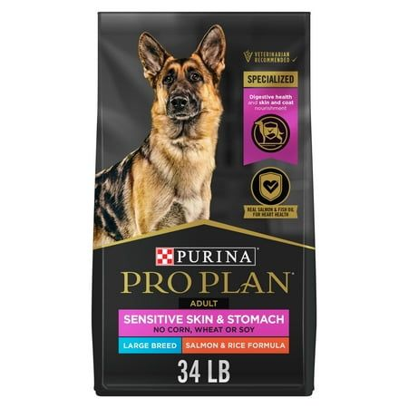
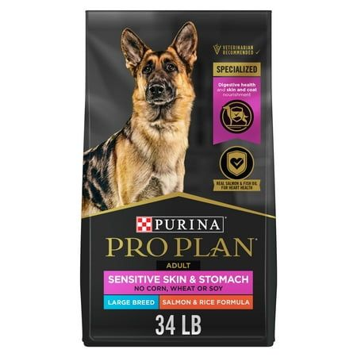

Products
 



Premium Nutrition for Optimal Health
At Paws & Whiskers, we carry only the highest-quality dog food to support your pet’s vitality. Our selection includes grain-free, limited-ingredient, and veterinarian-recommended formulas tailored for puppies, adults, and seniors. From protein-rich kibble to freeze-dried raw options and specialized diets for sensitive stomachs, allergies, or weight management, we help you find the perfect fuel for your dog’s unique needs. Every product is carefully curated to meet AAFCO standards, ensuring balanced nutrition for a shiny coat, strong immunity, and lasting energy.
Enriching Toys and Training Essentials
Keep your dog engaged and well-behaved with our interactive toys and training tools. We offer durable chew toys (like KONG and Nylabone) for teething puppies and aggressive chewers, puzzle feeders to stimulate mental sharpness, and plush toys for gentle play. Our training section includes harnesses, clickers, and treat pouches to reinforce good behavior, plus odor-neutralizing sprays and pee pads for hassle-free housebreaking. Whether you’re teaching new tricks or curbing boredom, our products make learning fun and rewarding.
Grooming and Wellness Care
Pamper your pup with our spa-worthy grooming supplies and health supplements. Choose from organic shampoos, detangling sprays, and de-shedding tools to maintain a healthy coat, or opt for dental care kits with enzymatic toothpaste and chewable brushes. We also stock vet-approved joint supplements, probiotics, and flea/tick preventatives to support overall wellness. For comfort, explore our orthopedic beds, cooling mats, and cozy sweaters—all designed to keep your dog happy in every season. At Paws & Whiskers, we believe luxury and practicality go paw in paw!
🾠Premium Nutrition for Optimal Health 🐾
🐾 Paws & Whiskers Pet Emporium 🐾
At Paws & Whiskers, we've got everything your furry family members need to thrive! For our canine companions, we offer premium dog food (grain-free, raw, and vet-recommended formulas 🥩), indestructible toys (KONG, Nylabone 🦴), comfy orthopedic beds 🛏️, stylish leashes & harnesses 🦮, health supplements 💊, and secure crates for travel or training 🚗. Our feline friends will adore our selection of grain-free cat foods 🐟, interactive toys (feather wands, laser pointers 🎣), plush cat caves 🏠 , scratching posts ✋, calming supplements 😌, and cozy window perches ☀️.
We carry grooming supplies for both species (shampoos, brushes, nail clippers ✂️), training aids (clickers, pee pads 🎓), and health essentials like flea/tick prevention 🚫🐜. Whether you have a playful puppy, a senior kitty, or anything in between, our carefully curated products meet the highest standards of quality and safety.
Visit our store today for personalized recommendations from our pet-loving staff! We'll help you find exactly what your cat or dog needs to live their happiest, healthiest life. 🐶❤️🐱
(Where every pet deserves the very best!)

Premium Pet Products for Happy, Healthy Companions
At Paws & Whiskers, we offer vet-recommended pet products designed for comfort, health, and fun—from plush orthopedic beds and interactive toys to premium foods, grooming essentials, and durable accessories. Every item is handpicked by pet experts to keep your furry friends safe, happy, and thriving at every life stage. 🐾